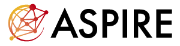
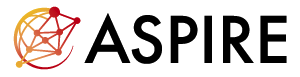

Overview
Welcome to our HANDS@ECCV24.Our HANDS workshop will gather vision researchers working on perceiving hands performing actions, including 2D & 3D hand detection, segmentation, pose/shape estimation, tracking, etc. We will also cover related applications including gesture recognition, hand-object manipulation analysis, hand activity understanding, and interactive interfaces.
The eighth edition of this workshop will emphasize the use of large foundation models (e.g. CLIP, Point-E, Segment Anything, Latent Diffusion Models) for hand-related tasks. These models have revolutionized the perceptions of AI, and demonstrate groundbreaking contributions to multimodal understanding, zero-shot learning, and transfer learning. However, there remains an untapped potential for exploring their applications in hand-related tasks.
Schedule
The HANDS workshop will be held in the afternoon on September 30th, 2024, at MiCo Milano.
Other information will be released later.
Call for Papers
Important Dates
| June 15, 2024 (Opened) | Paper Submission Start |
| July 25, 2024 11:59 (Pacific Time) | Full Length Paper Submission Deadline |
| August 10, 2024, 11:59 (Pacific Time) | Full Length Paper Author Notification & Extended abstracts and Posters Submission Deadline |
| August 20, 2024, 11:59 (Pacific Time) | Camera-ready Submission |
Topics
We will cover all hand-related topics. The relevant topics include and not limited to:- Hand pose and shape estimation
- Hand & object interactions
- Hand detection/segmentation
- Hand gesture/action recognition
- 4D hand tracking and motion capture
- Hand motion synthesis
- Hand modeling, rendering, generation
- Camera systems and annotation tools
- Novel algorithms and network architectures
- Multi-modal learning
- Self-/un-/weakly-supervised learning
- Generalization and adaptation
- Egocentric vision for AR/VR
- Robot grasping, object manipulation, Haptics
Submission Guidelines
Submission Website: https://cmt3.research.microsoft.com/HANDS2024We accept full length papers, extended abstracts and posters in our workshop. The full length submissions should be anonymized and will be one-round peer reviewed. The accepted full length papers will be included in the ECCV24 conference proceedings, while others will only be presented in the workshop. We welcome papers that are accepted to the ECCV2024 main conference or previous conferences, and extended abstracts that in progress, to show the posters in our workshop.
Call for full length papers
Full length submissions should follow ECCV2024 submission policies (no more than 14 pages) and use the official ECCV 2024 template. Note that the submissions violate the double-blind policy or the dual-submission policy will be rejected without review.
Call for extended abstracts and posters
Extended abstracts are not subject to the ECCV rules, and can use other templates. They should be shorter than the equivalent of 4 pages in CVPR template format. Note that extended abstracts are not anonymized, and will not be peer reviewed. Accepted extended abstracts will only publish on our website, show in our workshop and not appear in the ECCV24 conference proceedings. Posters can be simply submitted with PDF and their brief information like paper title, authors and conference name.
Invited Speakers
Shunsuke Saito Reality Labs Research
Shubham Tulsiani Carnegie Mellon University

Qi Ye Zhejiang University
Organizers

Hyung Jin Chang University of Birmingham
Rongyu Chen National University of Singapore
Zicong Fan ETH Zurich

Otmar Hilliges ETH Zurich
Kun He Meta Reality Labs

Take Ohkawa University of Tokyo
Yoichi Sato University of Tokyo
Elden Tse National University of Singapore
Linlin Yang Communication University of China
Lixin Yang Shanghai Jiao Tong University

Angela Yao National University of Singapore

Linguang Zhang Facebook Reality Labs (Oculus)
Sponsors

 

Contact
hands2024@googlegroups.com